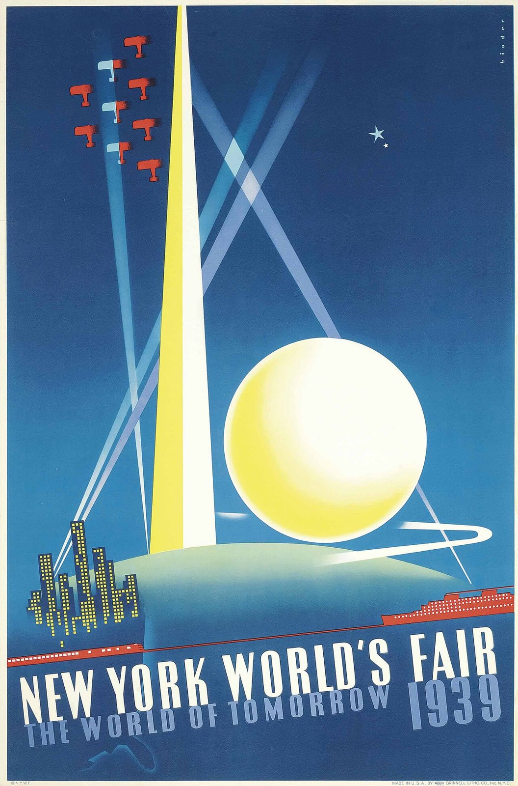

References / Poster / 274
New York World’s Fair poster by Joseph Binder
Joseph Binder’s poster for the 1939 fair: the Trylon and Perisphere in airbrushed light, with a streamlined train and liner on the horizon and slanted capitals.
- Source
- Christie’s: Joseph Binder, New York World’s Fair 1939
- Creator
- Joseph Binder
- Made
- 1938 (dated 20 July 1938 on Commons), for the 1939 fair
- Styles
- Streamline Moderne (agent-proposed, not yet reviewed by a person), Art Deco (agent-proposed, not yet reviewed by a person)
- Moods
- Optimistic, futuristic, monumental
- Evidence
- Downloaded and inspected the Commons copy, a scan from a Christie’s lot, at 1280 × 1939 px. I did not open the Christie’s page.
- Reviewed
- Rights
- Open license, stored. License: public domain. Rights policy

Context
Poster for the 1939 New York World’s Fair, whose theme was “The World of Tomorrow”. The printer’s line reads “Made in U.S.A. by … Grinnell Litho. Co. Inc. N.Y.C.” (read on the scan). Commons dates the design 20 July 1938. Commons.
Observed
- The ground is deep blue, lighter toward the bottom.
- A tall yellow and white spire (the Trylon) rises at left of center beside a large glowing yellow-white sphere (the Perisphere) on a pale green-blue mound.
- Pale blue searchlight beams cross the sky in diagonals; a formation of small red aircraft flies at upper left.
- A white swoosh curls around the base of the sphere like a speed trail.
- Along a red horizon line, a long streamlined red train runs left and a red ocean liner with rows of lit portholes sits at right; a skyline of lit windows rises at far left.
- “NEW YORK WORLD’S FAIR” is set in white condensed sans-serif capitals that slant forward; “THE WORLD OF TOMORROW” and “1939” below are in pale blue.
- The small line “© N.Y.W.F.” is printed at lower left.
Why it belongs
The poster places streamlined transport at the base of an Art Deco monument: the vertical beams belong to Deco, while the horizontal train, liner, and slanted capitals carry the streamline idea of speed. It fits the style record’s view of Streamline Moderne as a late branch of Art Deco.
Borrow
Slant condensed capitals forward and let one line of them run the full width.
Draw a thin horizontal band of vehicles or shapes along a horizon line under a large calm field.
Measured
Machine-extracted by tools/image-traits.py on . Full measurement.
- Mean chroma
- 0.29
- Palette
- #31517d 21%
- #26426a 21%
- #356695 12%
- #3c89b6 11%
- #fcfdf3 10%
- #f4ec6e 4%
- #7fa3c6 3%
- #b9d0c2 2%

